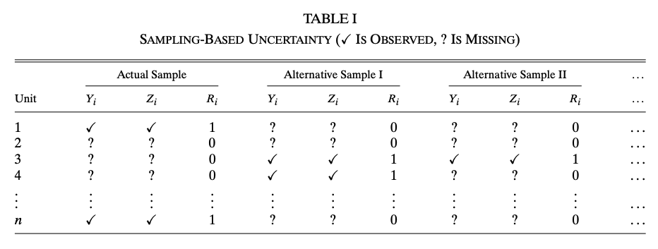
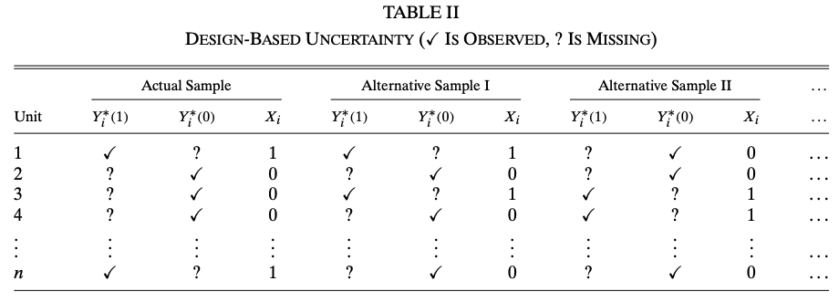

2 Sampling-based and Design-based Uncertainty
This Chapter briefly discusses the paper by Abadie et al. (2020).
In practice, researchers typically assume that the sample is randomly drawn from a large population of interest and report standard errors that are designed to capture sampling variation. This is common even in applications where it is difficult to articulate what that population of interest is, and how it differs from the sample.
In model-based regression analysis, the sample is often assumed to be generated from a DGP (true model), which implies that the population is infinite. However, there are research questions that deviate from this assumption, for example, analysis based on the data of all 50 states in US. Abadie et al. (2020) investigates the uncertainty in regression estimators when
Population is finite
A potential outcome function \(Y_i(\cdot)\) that maps a cause \(X_i\) into outcomes.
The uncertainty in this problems setting has two sources, sampling and the design of \(X_i\). To better illustrate, let’s consider an experiment with binary treatment \(X_i\). Let \(R_i \in \{0, 1\}\) denote whether unit \(i\) is included in the sample, \(Y_i(1), Y_i(0)\) denote the two potential outcomes. The following tables show the difference between the two source of uncertainties

We need two assumptions for this experimental data. Let \(n\) denote the population size, \(n_1\) denote the number of treated units in the population and \(N\) denote the sample size.
Assumption (Random Sampling) \[ Pr(R = r) = 1 \bigg/ \begin{pmatrix} n \\ N \end{pmatrix} \]
Assumption (Random Assignment) \[ Pr(X = x|R) = 1 \bigg/ \begin{pmatrix} n \\ n_1 \end{pmatrix} \]
We focus on the difference-in-sample-means estimator \[ \hat\theta = \frac{1}{N_1} \sum_{i = 1}^n R_iX_iY_i -\frac{1}{N_0} \sum_{i = 1}^n R_i(1 - X_i)Y_i \]
There are multiple parameters of interest in this setting \[ \theta^{\text{descr}} = \frac{1}{n_1}\sum_{i = 1}^nX_iY_i - \frac{1}{n_0}\sum_{i = 1}^n(1 - X_i)Y_i \] \[ \theta^{\text{causal, sample}} = \frac1N\sum_{i = 1}^n R_i(Y_i(1) - Y_i(0)) \] \[ \theta^{\text{causal}} = \frac{1}{n}\sum_{i = 1}^n (Y_i(1) - Y_i(0)) \]
The sources of uncertainty in each parameter of interest are reflected in the relationship between \(\hat\theta\) and \(\theta\). It is not difficult to show \[\begin{aligned} &\mathbb{E}[\hat\theta|X] = \theta^{\text{descr}} \\ &\mathbb{E}[\hat\theta|R] = \theta^{\text{causal, sample}} \\ &\mathbb{E}[\hat\theta] = \theta^{\text{causal}} \end{aligned}\] Conditioning on a variable is equivalent to regarding it as fixed. Hence, we see that \(\theta^{\text{descr}}\) only accounts for sampling uncertainty because design is fixed; \(\theta^{\text{causal, sample}}\) only accounts for design uncertainty; \(\theta^{\text{causal}}\) accounts for both.
The benefit of this setting and difference between the parameters of interest is that, we are distinguishing internal and external validity!. The internal and external validity formally tested by deriving the variance of \(\hat\theta\) under different uncertainty \[\begin{aligned} &V^{\text{sampling}} = \mathbb{E}[Var(\hat\theta|X)] = \frac{S_1^2}{N_1}\left(1 - \frac{N_1}{n_1}\right) + \frac{S_0^2}{N_0}\left(1 - \frac{N_0}{n_0}\right)\\ &V^{\text{design}} = \mathbb{E}[Var(\hat\theta|R)] = \frac{S_1^2}{N_1} + \frac{S_0^2}{N_0} - \frac{S_\theta^2}{N_1 + N_0}\\ &V^{\text{total}} = Var(\hat\theta) = \frac{S_1^2}{N_1} + \frac{S_0^2}{N_0} - \frac{S_\theta^2}{n_1 + n_0} \end{aligned}\] where \[ S^2_x = \frac{1}{n - 1}\sum_{i = 1}^n\left(Y_i(x) - \frac1n\sum_{j = 1}^nY_j(x)\right)^2 \] and \[ S_\theta^2 = \frac{1}{n - 1}\sum_{i = 1}^n\left(Y_i(1) - Y_i(0) - \frac1n\sum_{j = 1}^n(Y_j(1) - Y_j(0))\right) \]
Note
\(V^{\text{total}}\) is the variance of Neyman estimator, which is commonly used in experiments.
In the infinite population case, \(n \rightarrow \infty\), then \(V^{\text{sampling}} = V^{\text{total}} = \frac{S_1^2}{N_1} + \frac{S_0^2}{N_0}\). In other words, the term that goes to \(0\) in \(V^{\text{total}}\) and \(V^{\text{sampling}}\) is a finite population correction term.
Infinite population variance is conservative.
The above analysis are extended to linear regression in the paper. Consider the model \[ Y_i = U_i\theta + Z_i\gamma + \epsilon_i \] We can regard \(U_i\) as the treatment assignment procedure and do the same analysis to the OLS estimator \(\hat\theta\) in observational data. The problem here is the violation of Random Assignment Assumption because in observational data, \(U_i\) is very likely to be correlated with \(Z_i\). This problem is solved by using the regression \[ Y_i = X_i\theta + Z_i\gamma + \epsilon \] where \(X_i = U_i - Z_i\Pi\) with \(\Pi = \mathbb{E}[Z'Z]^{-1}\mathbb{E}[Z'U]\). \(X_i\) can be estimated by the regression of \(U_i\) on \(Z_i\) and plugged in the regression on \(Y_i\). The idea is that, after partialling out the effect of \(Z_i\), \(X_i\) is as if randomly assigned. We will talk more about this partialling out technique later in Section sec-FWL
3 Regression
We will review Regression on the population level and the sample level. The focus on the Conditional Expectation Function (CEF) and the linear projection model.
3.1 Best Predictor
A central goal of regression analysis is to find the best predictor of an outcome \(Y\) given some variables \(X\). We can write any predictor as a function \(f(X)\) of \(X\), and then the goal is to find the best function \(m(X)\) in the class of \(f(X)\). To start, we have to define what is “best”.
“Best”: MSE minimizing, namely, \[ m(X) = \arg \min_{f(X)} \mathbb{E}[(Y - f(X))^2] \]
Theorem 3.1 The best predictor of \(Y\) given \(X\) is \(m(X) = \mathbb{E}[Y|X]\).
Proof. Let \(e = Y - \mathbb{E}[Y|X]\) \[\begin{aligned} \mathbb{E}[(Y - f(X))^2] &= \mathbb{E}[(Y - \mathbb{E}[Y|X] + \mathbb{E}[Y|X] - f(X))^2] \\ &= \mathbb{E}[e^2 + 2e(\mathbb{E}[Y|X] - f(X)) + (\mathbb{E}[Y|X] - f(X))^2] \\ &= \mathbb{E}[e^2] + \mathbb{E}[(\mathbb{E}[Y|X] - f(X))^2] \end{aligned}\] The third equality follows by \[\begin{aligned} \mathbb{E}[e \cdot b(X)] &= \mathbb{E}\mathbb{E}[(Y - \mathbb{E}[Y|X])b(X)|X] \\ &= \mathbb{E}[(\mathbb{E}[Y|X] - \mathbb{E}[Y|X])b(X)] \\ &= 0 \end{aligned}\] and the MSE is minimized at \(m(X) = \mathbb{E}[Y|X]\)
Theorem thm-BP shows the reason why we should focus on CEF \(\mathbb{E}[Y|X]\) and build model for \(Y\) using CEF. The proof above already shows the condition we need for a CEF model: \[ Y = m(X) + e, \quad \mathbb{E}[e|X] = 0 \] These two equations together implies that \(m(X) = \mathbb{E}[Y|X]\).
3.2 Best Linear Predictor
Follow our definition of “best”, we can also define the best linear predictor.
Definition 3.1 (Best Linear Predictor) The best linear predictor of \(Y\) given \(X\) is \(X\beta\) where \(\beta\) minimizes \[ S(\beta) = \mathbb{E}[(Y - X\beta)^2] \] The minimizer \(\beta = \arg\min_b S(b)\) is the linear projection coefficient.
Now we try to solve for \(\beta\), and find the assumptions we need during the solving process. First expand \[ S(\beta) = \mathbb{E}[Y^2] - 2\beta'\mathbb{E}[X'Y] + \beta'\mathbb{E}[X'X]\beta \] The first order condition is \[ 0 = \frac{\partial}{\partial\beta}S(\beta) = -2\mathbb{E}[X'Y] + 2\mathbb{E}[X'X]\beta \] and thus \(\beta = \mathbb{E}[X'X]^{-1}\mathbb{E}[X'Y]\) is by definition the linear projection coefficient. \(\beta\) is also referred to as a regression coefficient.
Therefore, the assumptions for the linear projection coefficient to exist need to ensure the existence of every term in \(S(\beta)\) and that \(\mathbb{E}[X'X]\) is invertible.
Assumption (Existence of Linear Projection Coefficient)
\(\mathbb{E}[Y^2] < \infty\)
\(\mathbb{E}\Vert X \Vert^2 < \infty\)
\(\mathbb{E}[X'X]\) is positive definite.
Note
There is no linearity assumption required for the existence of linear projection coefficient!
By construction, the projection error \(\epsilon = Y - X\beta\) where \(\beta = \mathbb{E}[X'X]^{-1}\mathbb{E}[X'Y]\) satisfies \(\mathbb{E}[X'\epsilon] = 0\), which is implied by the first order condition. Now, we have a linear projection model: \[ Y = X\beta + \epsilon, \quad \beta = \mathbb{E}[X'X]^{-1}\mathbb{E}[X'Y], \quad \mathbb{E}[X'\epsilon] = 0 \]
3.3 Linear CEF Model
Estimating the general form of CEF is difficult (not impossible, e.g kernel estimator), because a function can be seen as a parameter with infinite dimension. For practical reasons, we impose linearity assumption on the CEF model, \[ Y = X\beta_0 + e, \quad \mathbb{E}[e|X] = 0 \]
Justification for Linear CEF:
\(\beta_0\) is the linear projection coefficient. Notice that \(\mathbb{E}[e|X] = 0\) implies \(\mathbb{E}[X'e] = 0\), and solving \(\mathbb{E}[X'(Y - X\beta_0)] = 0\) gives \(\beta_0 = \mathbb{E}[X'X]^{-1}\mathbb{E}[X'Y]\). Therefore, if CEF is linear, the CEF coefficient is the linear projection coefficient.
\(\beta_0\) is the best linear predictor. This is implied by point 1.
If CEF is not linear, \(X\beta_0\) is the best linear approximation of CEF. One can show \(\beta_0 = \arg \min_\beta \mathbb{E}[(\mathbb{E}[Y|X] - X\beta)^2]\). The proof is similar to the proof for Theorem thm-BP.
When Linear CEF is the True CEF
In general, we need to impose linearity assumption for CEF. But there are situations when CEF is inherently linear. For example,
Saturated model: \(X_1, ... X_p\) are dummy variables, then the CEF is a linear function of \(X_1, ... X_p\) and all cross-products of \(X_i\).
\(X\) and \(Y\) are jointly normal. \(\mathbb{E}[Y|X] = \mu_Y + \Sigma_{XY}\Sigma_X^{-1}(X - \mu_X)\).
3.4 OLS Estimation
The OLS estimator is obtain by minimizing the sample analogy of \(S(\beta)\), namely \[ \hat\beta = \arg \min_\beta \frac1n \sum_{i = 1}^{n}(Y_i - X_i\beta)^2 \] and the OLS estimator takes the form \[ \hat\beta = (X'X)^{-1}(X'Y) \]
The consistency of \(\hat\beta\) can be obtained by decomposing using the linear projection model, \[ \hat\beta = (X'X)^{-1}(X'(X\beta + \epsilon)) = \beta + (X'X)^{-1}(X'\epsilon) \] The probability limit of the second term is \(0\) by the property of \(\epsilon\). Therefore, OLS estimator always converges to the linear projection coefficient \(\beta\) regardless of linearity assumption. If CEF is assumed to be linear, \(\hat\beta\) converges to \(\beta_0\) because \(\beta_0 = \beta\).
Question: OLS is a special case of GMM. Because the first order condition of the minimizing problem of OLS is \(\frac1n \sum_{i = 1}^{n}X_i(Y_i - X_i\hat\beta) = 0\), which is also a moment condition for GMM. But GMM is only consistent, OLS is unbiased and consistent, why?
3.5 Partialling Out Regression
(Borrowed from Professor Victor Chernozhukov’s notes)
In Econometric analysis, it is common to have some parameters of interest out of all regression coefficients. We partition the regressors into two groups \[ X = (D, W) \] where \(D\) is our variable of interest with dimension \(p_1\) and \(W\) is the covariates with dimension \(p_2\). We consider the linear projection model \[ Y = D\tau + W\beta + \epsilon \tag{3.1}\] The interpretation of \(\theta\) is the partial effect of \(D\) on \(Y\). In this chapter, we explore the math behind this interpretation.
Define the partialling-out operator in population with respect to \(W\) under the assumption of the existence of linear projection coefficient \[ \tilde{V} = V - W\gamma_{vw}, \quad \gamma_{vw} = \arg \min_b \mathbb{E}[(V - Wb)^2] \] It is easy to verify that this partialling-out operator is a linear operator \[ Y = V + U \rightarrow \tilde{Y} = \tilde{V} + \tilde{U} \]
We apply this partialling-out operator to model Equation eq-model to get \[ \tilde{Y} = \tilde{D}\tau + \tilde{W}\beta + \tilde\epsilon \] which implies \[ \tilde{Y} = \tilde{D}\tau + \epsilon \tag{3.2}\] because \(\tilde{W} = 0\) and \(\tilde\epsilon = \epsilon\), which holds by the property of projection error \(\mathbb{E}[\epsilon W]\).
For this new linear projection model in Equation eq-po, by solving \(\mathbb{E}[\tilde{D}'\epsilon] = 0\), we have \[ \tau = \mathbb{E}[\tilde{D}'\tilde{D}]^{-1}\mathbb{E}[\tilde{D}'Y] \] This is the “partial effect” of \(D\) on \(Y\). This result is also know as the Frisch-Waugh-Lovell theorem.
Similarly, we can also define the partialling-out operator in sample \[ \check{V} = V - W\hat\gamma_{vw}, \quad \hat\gamma_{vw} = \arg \min_b \frac1n \sum_{i = 1}^n(V - Wb)^2 \] And the estimator of \(\tau\) is \[ \hat\tau = (\check{D}'\check{D})^{-1}(\check{D}'\check{Y}) \] which is the sample version of FWL theorem.
The Adaptive Property of FWL/PO
Chernozhukov’s notes introduce a lemma about the adaptive property of FWL estimator. Here we try to explain the adaptive property from a different angle, the class of plug-in estimators.
Consider the coefficient \(\tau = \mathbb{E}[\tilde{D}'\tilde{D}]^{-1}\mathbb{E}[\tilde{D}'Y]\) an its estimator \(\hat\tau = (\check{D}'\check{D})^{-1}(\check{D}'\check{Y})\), there is another estimator between these two quantities, \[ \tilde\tau = (\tilde{D}'\tilde{D})^{-1}(\tilde{D}'\tilde{Y}) \] The difference between \(\tilde\tau\) and \(\hat\tau\) is that we use the population version of partialled out variables \((\tilde{D}, \tilde{Y})\) instead of the sample version. Note that \(\tilde\tau\) is the OLS estimator of \(\tau\) but it is an infeasible estimator because \((\tilde{D}, \tilde{Y})\) are not available.
On the contrary, \(\hat\tau\) is feasible by plugging in \((\check{D}, \check{Y})\) as estimators of \((\tilde{D}, \tilde{Y})\). We call \(\hat\tau\) a plug-in estimator. We can derive the asymptotics of \(\tilde\tau\) as OLS estimator, but the question is, does \(\hat\tau\) have the same asymptotics as \(\tilde\tau\)?
The adaptive property lemma in Chernozhukov’s notes shows that \(\hat\tau\) and \(\tilde\tau\) are asymptotically equivalent under mild regularity conditions without giving a proof. In our plug-in estimator setting, it is not difficult to verify this lemma by expending \(\hat\tau\) twice with mean value theorem.
Robustness of FWL/PO
The adaptive property is a robustness property, which means that the first step estimators does not have (local) effect on the second step estimators. Chernozhukov et al. (2018) utilizes this property and develops the Double Machine Learning (DML) estimator for partially linear models.
Consider the partially linear model \[ Y = D\tau + g(W) + \epsilon \tag{3.3}\] where we allow \(W\) to be high dimensional or \(g(\cdot)\) to be highly nonlinear while \(D\) remains low dimensional. OLS does not work for this model. Machine Learning estimators for \(\tau\) is not root-n consistent and thus, is difficult to do inference on \(\tau\).
The solution is to consider a generalization of FWL \[ Y - \mathbb{E}[Y|W] = (D - \mathbb{E}[D|W])\tau + \epsilon, \quad \mathbb{E}[(D - \mathbb{E}[D|W])\epsilon] = 0 \] We can use ML to estimate \(\mathbb{E}[Y|W]\) and \(\mathbb{E}[D|W]\) in the first step, and obtain OLS estimator \(\hat\tau\). With some extra algorithms to control other sources of bias, \(\hat\tau\) is root-n consistent.
This gives us the advantage of FWL/PO over the original model in Equation eq-partiallinear. If we go back to our model in Equation eq-model, in the low dimensional \(W\) setting, \(\gamma_{yw}\) and \(\gamma_{dw}\) are estimated by OLS (sample version PO), which guarantees to be root-n consistent. The robustness of FWL means that even if the convergence rate of\(\gamma_{yw}\) and \(\gamma_{dw}\) lower than root-n, \(\hat\tau\) is still root-n consistent.
Contamination Bias in Linear Regressions (Goldsmith-Pinkham, Hull, and Kolesár 2022)
We use this paper to illustrate the use of FWL/PO in research. This paper considers linear regression in the presence of
- Multiple treatments with correlation
- Heterogeneous treatment effect
- Covariates \(W\)
- Propensity scores and treatment effect are functions of \(W\)
Point 1 is the key setting. Point 2 and 3 are common in linear regression. Point 4 ensures that the propensity score and the treatment effect are correlated (I think this is a natural setting, but the authors of the paper found an application where heterogeneous treatment effect is uncorrelated with propensity score ). Examples of such setting include stratified RCT, staggered Diff-in-Diff, etc. In fact, the paper is a generalization of the heterogeneous DID problem.
From Chapter sec-hette, we know that ATE is a convex combination of the ATT and ATU. But if there are multiple treatments, the ATE identified in linear regression is no longer a convex combination (there are negative weights). We can use FWL/PO to illustrate.
Consider a simple case: a stratified RCT with treatment \(D_i = {0, 1, 2}\). People may self-select into strata, so controlling for covariates is necessary. With strata, people are randomly assigned to a treatment level, so \(D_i\) follows a multinomial distribution with probability \((p_0(W), p_1(W), p_2(W))\). We can use two binary variable \(D_i^1\) and \(D_i^2\) to represent \(D_i\), then \(p_1(W)\) and \(p_2(W)\) are propensity scores of \(D^1\) and \(D^2\) respectively. Note that \(D^1\) and \(D^2\) are correlated because receiving the first treatment means that you cannot receive the second. To estimate the effect of \(D^1\) and \(D^2\), the linear regression many economists would run is \[ Y = D^1\tau_1 + D^2\tau_2 + W\beta + \epsilon \] By FWL, \(\tau_1\) is equivalent to that in the regression \[ Y - \mathbb{E}[Y|W, D^2] = \tau_1(D^1 - \mathbb{E}[D^1|W, D^2]) + \epsilon \] Notice that \(D^1 - \mathbb{E}[D^1|W, D^2]\) is not the CEF error of \(D^1\) because by the experimental design, the CEF of \(D^1\) is a function of only \(W\). This is the source of “contamination bias”. Another way to see this is that the treatment effect \(\tau_1\) of \(D^1\) should be independent of \(D^2\), however, it is a function of \(D^2\) and \(W\) in the linear regression, which means that \(\tau_1\) is “contaminated” by the units with \(D^2\) treatment.
The easiest way to avoid contamination bias is by regression adjustment, i.e including all interaction terms between \(D^k\) and demeaned \(W\).
Connection to the Negative Weights Literature
The contamination bias problem identified here – where OLS coefficients with multiple treatments can place negative weights on certain subgroup treatment effects – is closely related to the broader “negative weights” literature that has become a major theme in difference-in-differences research. In particular, the staggered DiD setting is a special case of the multiple-treatment framework analyzed by Goldsmith-Pinkham, Hull, and Kolesár (2022), where different treatment cohorts act as multiple correlated treatments. See sec-hette (Chapter 8) for a detailed treatment of heterogeneous treatment effects and the negative weights problem in DiD designs.
Further Reading
- Abadie et al. (2020) – The foundational reference for this chapter. Provides the framework for distinguishing sampling-based from design-based uncertainty and derives finite population corrections for regression estimators.
- MacKinnon, Nielsen, and Webb (2023), “Cluster-Robust Inference: A Guide to Empirical Practice,” Journal of Econometrics – A practical guide for applied researchers on cluster-robust inference, covering when and how to cluster standard errors, with guidance on few-cluster problems and wild bootstrap methods.
- Cattaneo, Feng, and Underwood (2024) – Recent advances in randomization inference that complement the design-based perspective developed in this chapter.
- For extensions of the FWL/partialling-out framework to high-dimensional and nonparametric settings via Double Machine Learning, see sec-DML (Chapter 10).
Abadie, Alberto, Susan Athey, Guido W Imbens, and Jeffrey M Wooldridge. 2020. “Sampling-Based Versus Design-Based Uncertainty in Regression Analysis.” Econometrica 88 (1): 265–96.
Chernozhukov, Victor, Denis Chetverikov, Mert Demirer, Esther Duflo, Christian Hansen, Whitney Newey, and James Robins. 2018. “Double/Debiased Machine Learning for Treatment and Structural Parameters.” Oxford University Press Oxford, UK.
Goldsmith-Pinkham, Paul, Peter Hull, and Michal Kolesár. 2022. “Contamination Bias in Linear Regressions.” National Bureau of Economic Research.